Overview
MONO is an innovative robotic fish installation, conceptualised as the physical manifestation of the epilogue from 'Moni's Diary'. This narrative delves into the complexities of social anxiety and the path to self-consistency. The installation is responsive to human proximity, activating and coming to life as someone approaches within a metre's distance. As the light illuminates, Moni’s tail engages in a unique dance of Morse code, with movements up and down representing dots ('.'), sways to the left and right for dashes('-'), and pauses to signify Morse code blanks.
This interactive experience is an invitation for introspection. Observers are encouraged to take a pen and document their interpretations of Moni's Morse code movements, potentially unveiling the messages Moni seeks to convey. The overarching theme of MONO is Moni's endeavour to shy away from the light, a metaphor for retreating from the intense spotlight of social interaction. This retreat is not out of fear, but rather it's a quest for inner strength and peace amidst the often chaotic and demanding societal expectations.